Hallo! & ♥︎-lich Willkommen in meinem Portfolio.
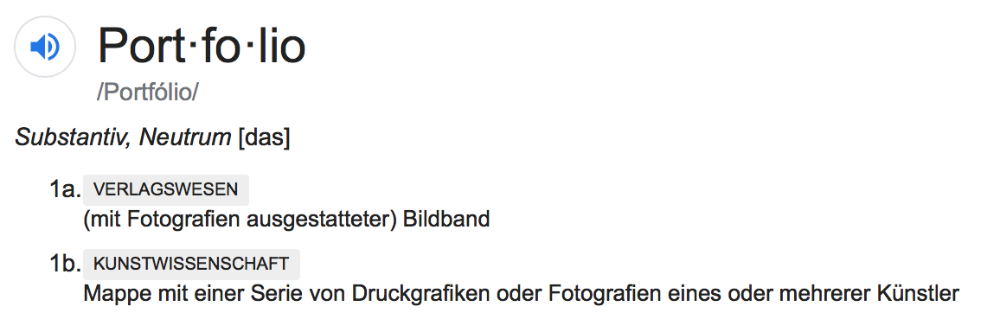Auf dieser Website findest du meine virtuelle Kunstmappe oder Bildband. Sie beinhaltet verschiedene
Arbeiten von mir, die enstanden sind, seit ich mit 14 Jahren das erste Mal eine Spiegelgeflexkamera
in der Hand hatte. Hauptsächlich sind hier Fotografien aufgeführt, ich mache jedoch auch gerne
Videos, was sich vor allem im Laufe unserer Weltreise entwickelt hat. Abgesehen davon
zeichne und male ich gerne, am liebsten mit Aquarell oder Bleistift, oder gestalte mein
Bullet Journal.
Doch auch in der digitalen Welt kommen ständig neue Dinge dazu, wie zum Beispiel die Gestaltung
meines eigenen Blogs. Es macht einfach so viel Spaß,
herumzuspielen und Neues zu lernen!
Hier kannst du mehr über mich erfahren, oder gelange
hier direkt zu meinem Portfolio!
Direkt das Aktuellste: Bilder, die seit unserer Ankunft in Furtwangen entstanden sind.
Vielleicht erkennst du ja den ein oder anderen Ort wieder?
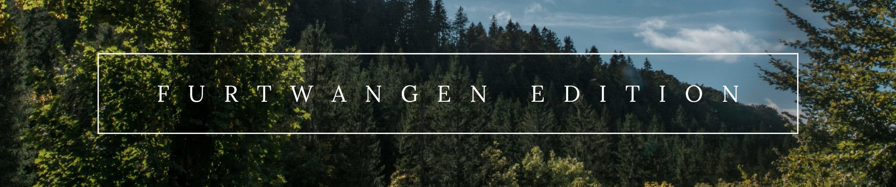

 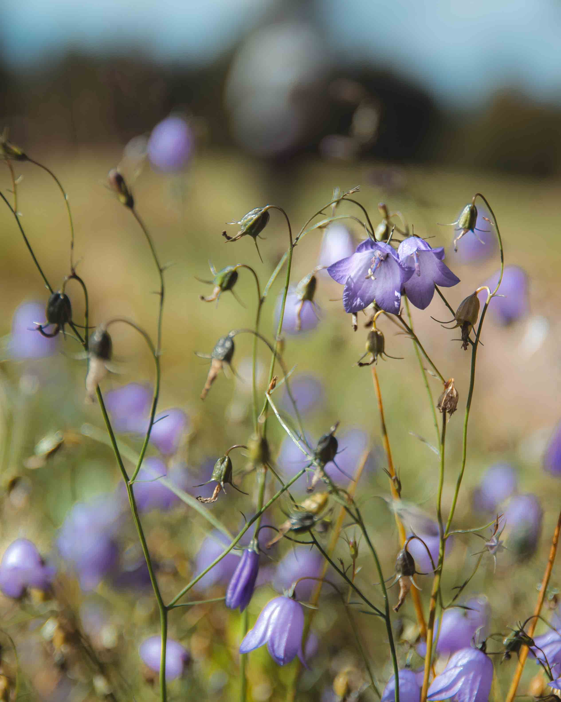
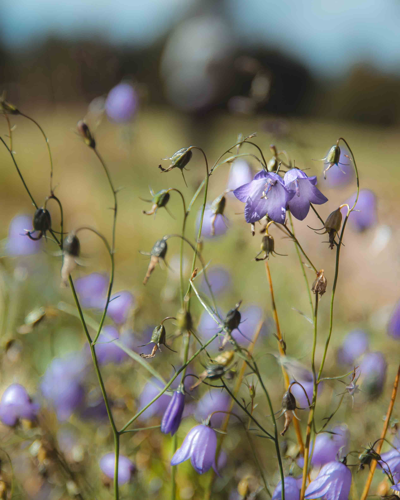


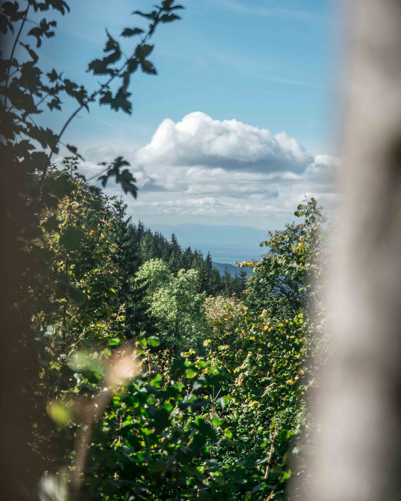
 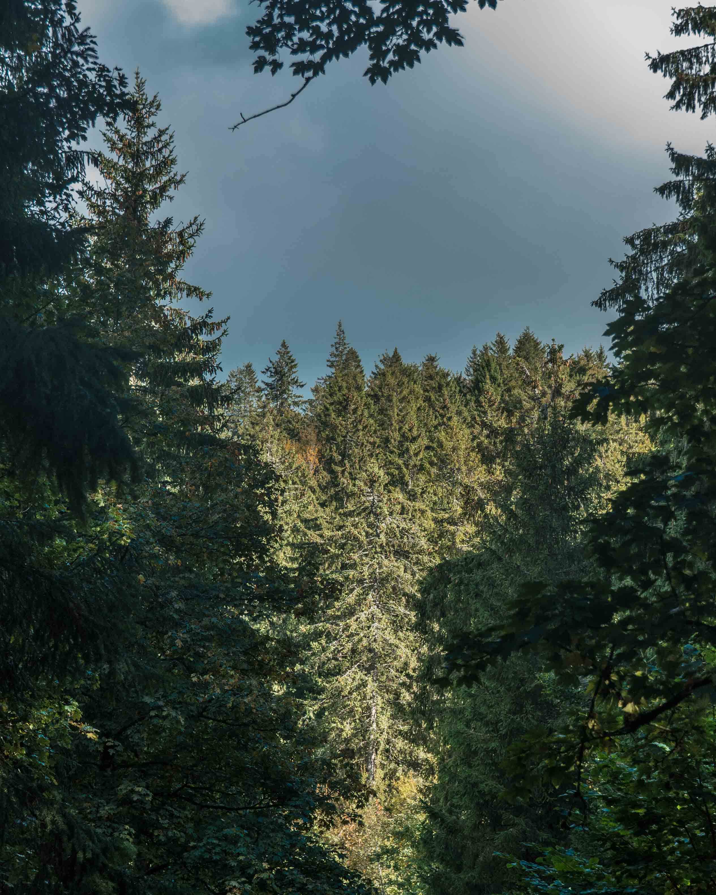
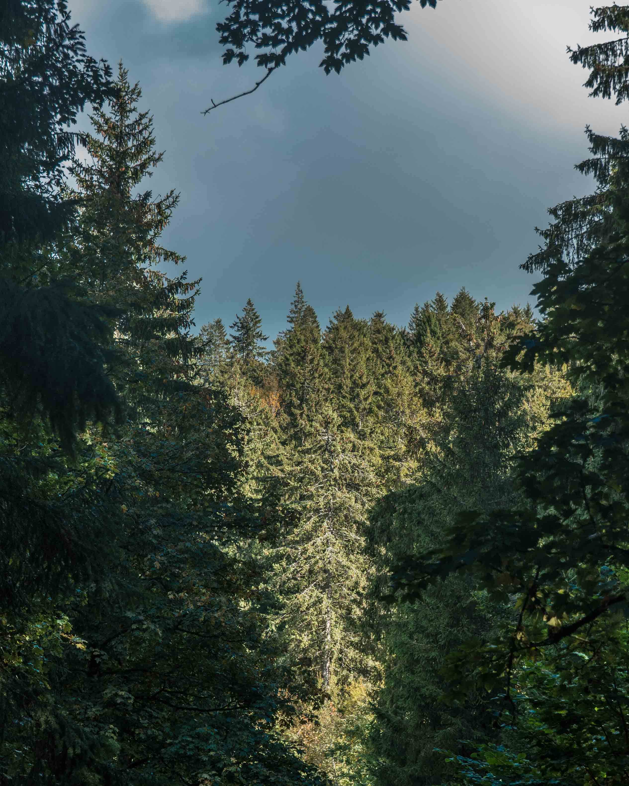
 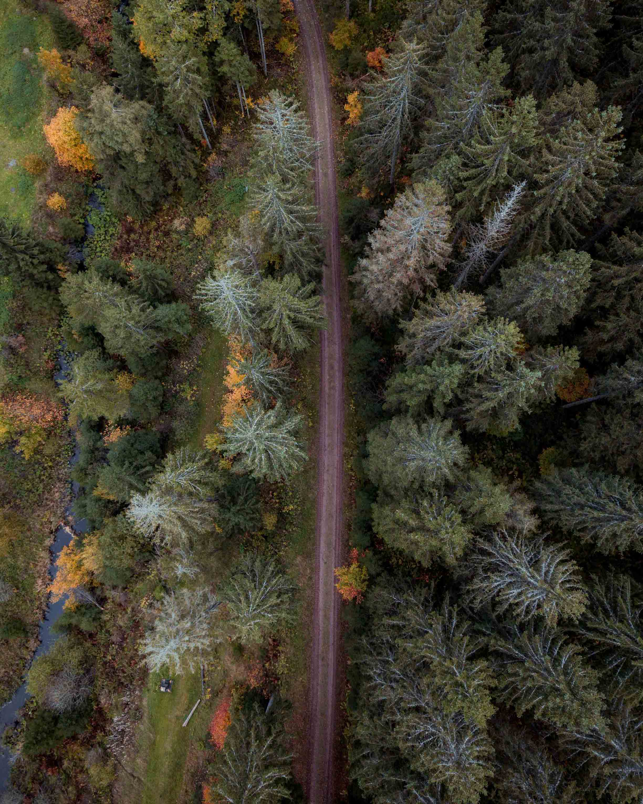
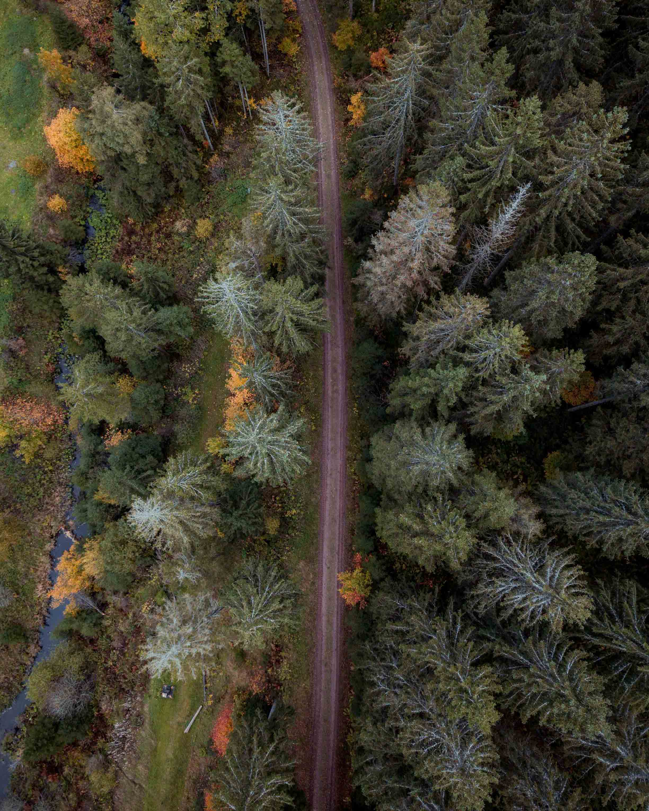
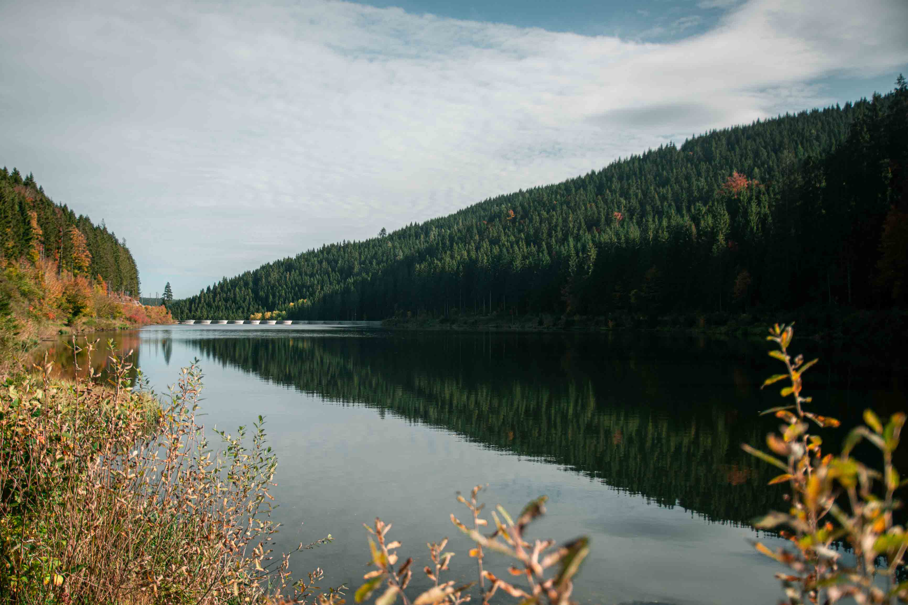
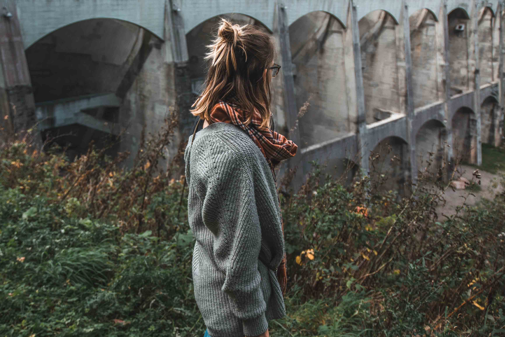
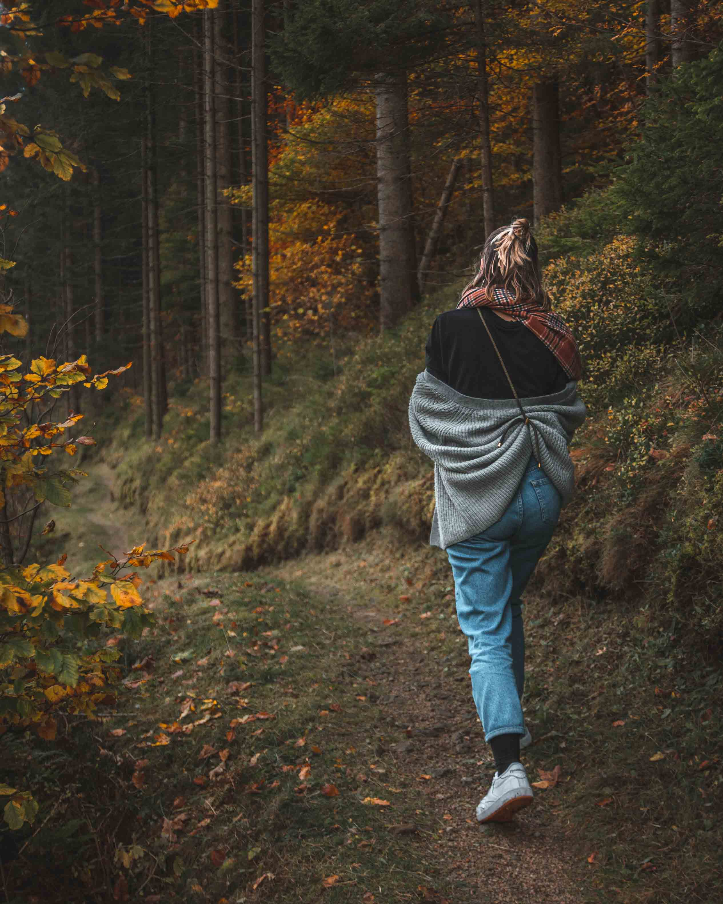